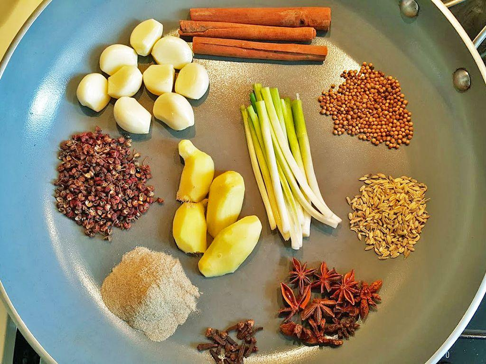
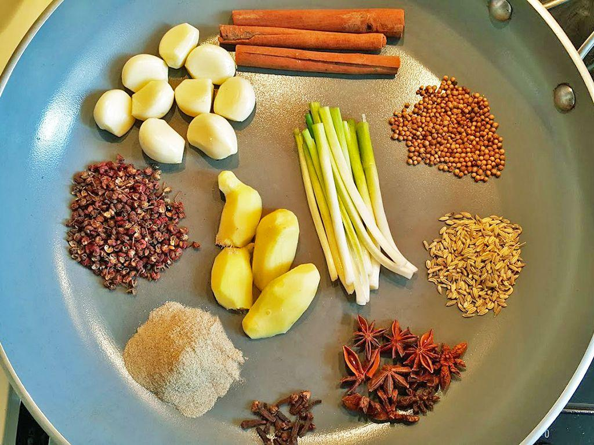

About the Dish
Chinese dumplings (*jiǎozi*) have been a staple in Chinese cuisine for centuries, especially during the **Lunar New Year**. Our version, Dragon’s Flame Dumplings, is filled with spiced pork, scallions, and ginger, then served with a fiery garlic-chili oil that pays homage to **Sichuan** flavors.
Each dumpling is hand-folded with care, preserving the traditional crescent shape that symbolizes **wealth and prosperity** in Chinese culture.
Did You Know?
- Dumplings are traditionally eaten at midnight on New Year's Eve to bring luck.
- Our chili oil uses a secret mix of 7 Chinese spices.
- The fold on a dumpling represents the balance of yin and yang.
 
